Markdown 是一种轻量级标记语言，它允许人们使用易读易写的纯文本格式编写文档。
Markdown 语言在 2004 由约翰·格鲁伯（英语：John Gruber）创建。
Markdown 的设计理念是"易读易写"，让人们能够使用简单的纯文本格式来编写结构化文档。
Markdown 编写的文档可以导出 HTML 、Word、图像、PDF、Epub 等多种格式的文档。
Markdown 编写的文档后缀为 .md, .markdown。
Markdown 的核心特点包括：
简洁性：使用直观的符号来表示格式，比如用 # 表示标题，用 * 表示列表项。这些符号在视觉上就能传达其含义，即使不进行渲染也具有良好的可读性。
可读性：即使是纯文本形式的 Markdown 文档，也能清晰地展现文档的结构和层次。读者无需专门的软件就能理解内容的组织方式。
便携性：Markdown 文件是纯文本格式，可以在任何文本编辑器中打开和编辑，不依赖特定的软件或操作系统。
转换性：可以轻松转换为 HTML、PDF、Word 文档等多种格式，满足不同的发布需求。
标记语言是一种用特定符号来描述文档结构和格式的语言。传统的标记语言如 HTML 功能强大但语法复杂，而轻量级标记语言则简化了这一过程。
与 HTML 相比，Markdown 的优势在于：
Markdown 并不是 HTML 的替代品，而是 HTML 的简化版本。实际上，Markdown 的最终目标就是转换为 HTML。两者的关系可以这样理解：
Markdown 源码 → 解析器 → HTML 输出 → 浏览器渲染
例如，当你写下：
# 这是一个标题
它会被转换为：
<h1>这是一个标题</h1>
重要的是，在 Markdown 中你可以直接使用 HTML 标签，这为复杂格式提供了灵活性。当 Markdown 的基础语法无法满足需求时，可以嵌入 HTML 代码来实现特定效果。
提高写作效率：无需频繁使用鼠标进行格式设置，可以保持思路的连贯性。写作者可以专注于内容创作，而不被格式问题分散注意力。
降低学习门槛：相比于 LaTeX、HTML 等标记语言，Markdown 的语法极其简单，大多数人可以在一小时内掌握基本用法。
广泛兼容性：几乎所有的现代文本编辑器、代码编辑器、笔记应用都支持 Markdown。从简单的记事本到专业的 IDE，你都能找到 Markdown 的身影。
版本控制友好：由于是纯文本格式，Markdown 文件可以很好地与 Git 等版本控制系统配合，便于追踪文档的修改历史和团队协作。
未来适应性：即使特定的软件或平台消失，Markdown 文件作为纯文本仍然可以被访问和编辑，确保了内容的长期可用性。
在软件开发领域，Markdown 已成为技术文档的标准格式。它特别适合：
API 文档：清晰的标题层次和代码块展示，让 API 说明既专业又易读。许多 API 文档生成工具（如 Swagger）都支持 Markdown 格式的描述。
项目说明：从安装指南到使用手册，Markdown 能够有效组织技术信息。代码示例、配置文件、命令行操作都能得到恰当的展示。
开发规范：团队的编码规范、设计准则、工作流程等都可以用 Markdown 编写，方便团队成员查阅和更新。
现代的博客平台和静态网站生成器大多支持 Markdown：
内容管理：博主可以专注于内容创作，而不必担心复杂的 HTML 编码。文章的格式化通过简单的标记即可完成。
平台迁移：使用 Markdown 编写的文章可以轻松在不同平台间迁移，不会因为平台特有的格式而被锁定。
离线编写：可以在任何文本编辑器中离线编写文章，然后批量发布，提高了写作的灵活性。
GitHub 平台广泛使用 Markdown，特别是项目的 README 文件：
项目介绍：清晰展示项目的目的、特性、使用方法等关键信息。
安装指南：通过代码块和列表，提供详细的安装和配置步骤。
贡献指南：说明如何参与项目开发，包括代码规范、提交流程等。
问题跟踪：在 Issues 和 Pull Requests 中，开发者使用 Markdown 来描述问题、提供解决方案。
Markdown 正成为数字笔记的首选格式：
学习笔记：支持数学公式、代码高亮、图表等多种内容类型，适合技术学习和知识整理。
会议记录：清晰的标题结构和列表格式，让会议要点一目了然。
知识库建设：企业和个人都在使用 Markdown 构建知识库，通过链接和标签组织信息。
越来越多的写作平台开始支持 Markdown：
GitHub、简书、知乎：这些平台的编辑器支持 Markdown 语法，让创作者能够快速格式化文章。
GitBook、Notion：专业的文档和笔记平台，原生支持 Markdown，提供强大的组织和协作功能。
静态博客生成器：Jekyll、Hugo、Hexo 等工具让用户能够用 Markdown 创建专业的网站。
《了不起的Markdown》：
工欲善其事，必先利其器，选择一个合适的编辑器对学习 Markdown 至关重要：
Visual Studio Code：微软开发的免费编辑器，通过安装 Markdown 相关扩展，可以获得强大的编辑和预览功能。
VScode 安装教程：https://www.runoob.com/vscode/vscode-tutorial.html
VScode 支持 Markdown 的扩展包括：
另外国内阿里与字节也有基于 VS Code 开发的 IDE：
Obsidian ：本地 Markdown 笔记系统，用文件夹和纯文本驱动知识结构，使用教程参考： https://www.runoob.com/markdown/obsidian-tutorial.html。
Mark Text：开源的实时预览 Markdown 编辑器，界面简洁，功能完整。下载地址：https://github.com/marktext/marktext/
Zettlr：学术写作导向的 Markdown 编辑器，支持引用管理和论文写作功能。下载地址：https://github.com/Zettlr/Zettlr
Joplin：免费开源的支持 markdown 免费的笔记应用 -- https://joplinapp.org/
Markdown 在线编辑器：https://www.jyshare.com/front-end/712/。
Dillinger：https://dillinger.io/，功能齐全的在线 Markdown 编辑器，支持云同步和多种导出格式。
StackEdit：https://stackedit.io/，基于浏览器的编辑器，与 Google Drive、Dropbox 等云服务集成。
简书、语雀编辑器：国内平台提供的在线 Markdown 编辑环境。
本教程将使用 VSCode 编辑器来讲解 Markdown 的语法，VSCode 支持 MacOS 、Windows、Linux 平台，且包含多种主题。
VSCode 默认集成了 Markdown 文档编辑插件，原生就支持高亮 Markdown 的语法。
VSCode（全称：Visual Studio Code）是一款由微软开发且跨平台的免费源代码编辑器。
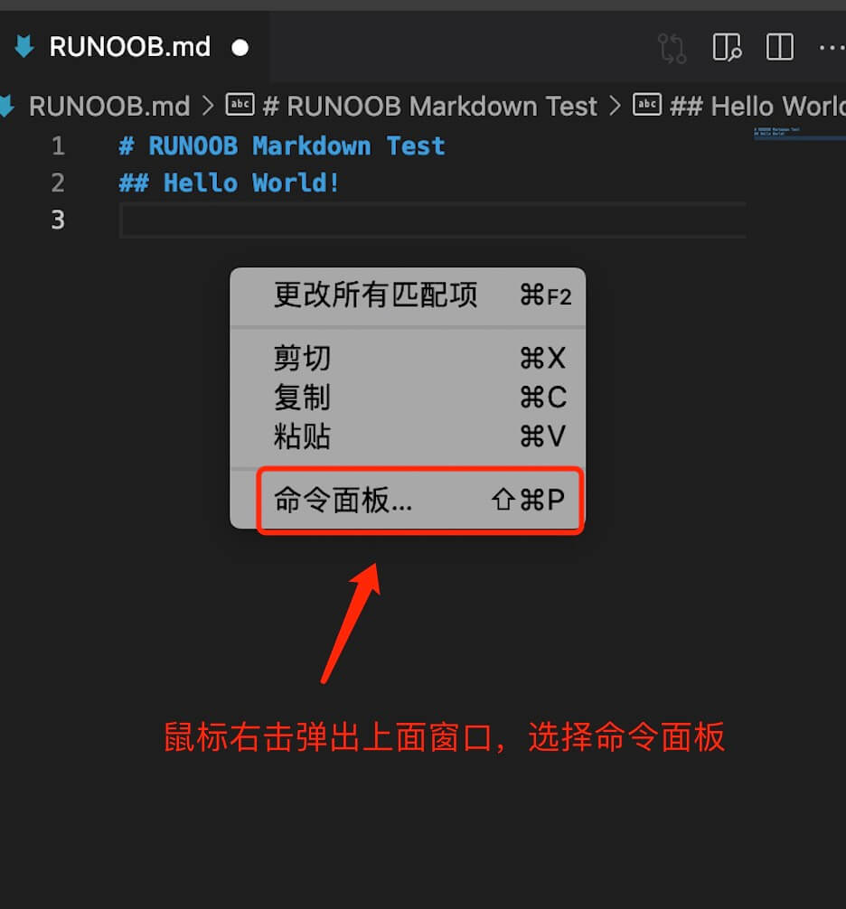
VSCode 实时预览还需要执行 Markdown: Open Preview to the Side 命令来实现。
在命令窗口输入 Markdown: Open Preview to the Side 命令：
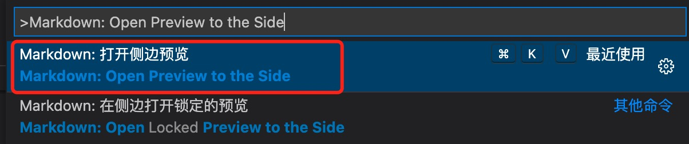
最终效果：
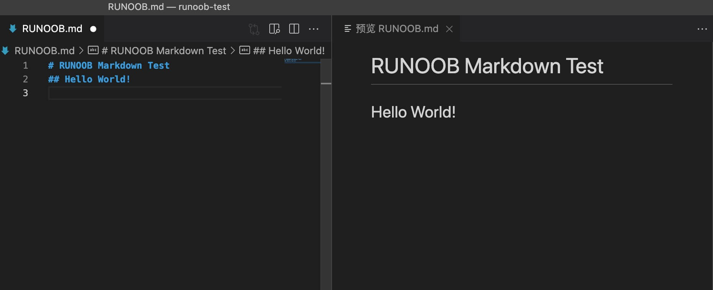
如果你需要将 markdown 转为 PDF、图片、HTML 等格式也可以安装对应的插件来实现。
你也可以使用我们的在线编辑器来测试：https://www.jyshare.com/front-end/712。
MarkDown 思维导图工具：https://www.jyshare.com/front-end/9692/。
接下来的测试中，我们先在 VSCode 下安装 Markdown Preview Enhanced 插件来实现更强大的功能。
点击右侧栏扩展按钮，查找Markdown Preview Enhanced 插件，点击安装：
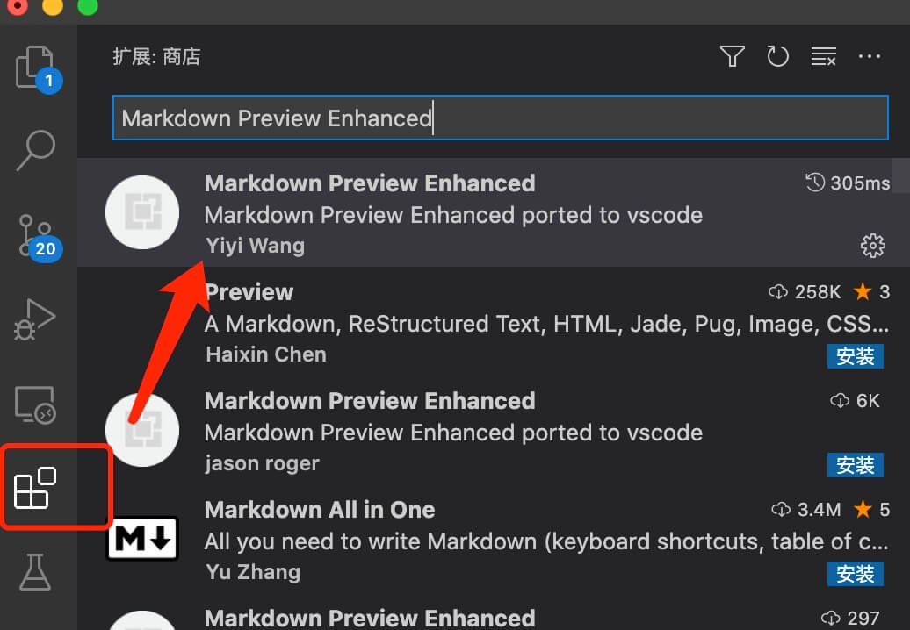
安装完成后重启 VSCode。
在 RUNOOB.md 输入以下代码：
# RUNOOB Markdown Test ## Hello World!
将该代码格式粘贴到文件 RUNOOB.md 上，效果如下：
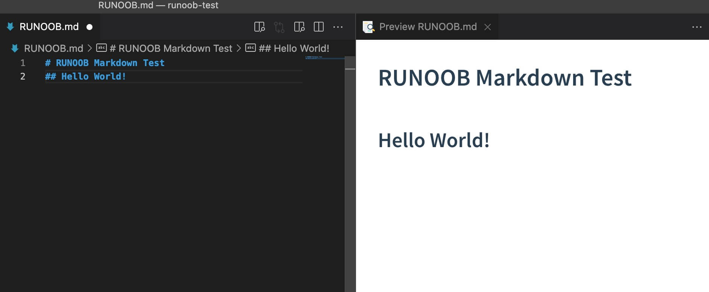
在预览框中右击鼠标还提供了各种导出功能：
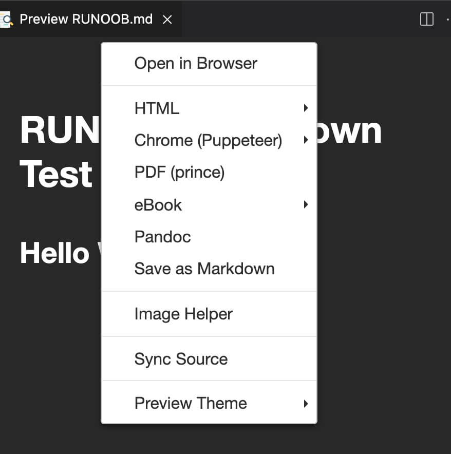
我们也可以使用 MarkText-- 一款简单而优雅的开源 Markdown 编辑器。
MarkText 下载地址 https://github.com/marktext/marktext/releases，可以根据不同系统选择不同的安装包：
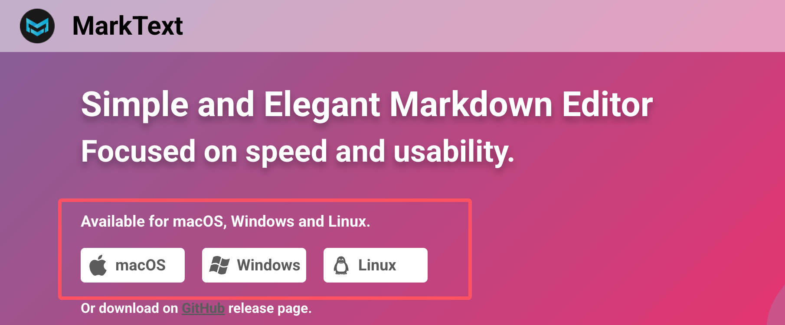
下载安装后，我们可以在菜单的 View 选项切换源码模式，也可以显示菜单栏：
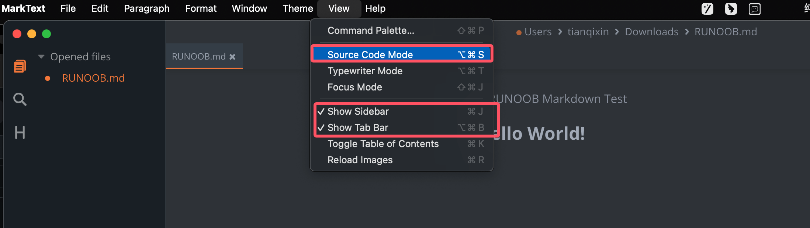
通过菜单的 File 选项，可以导出不同格式的文件：
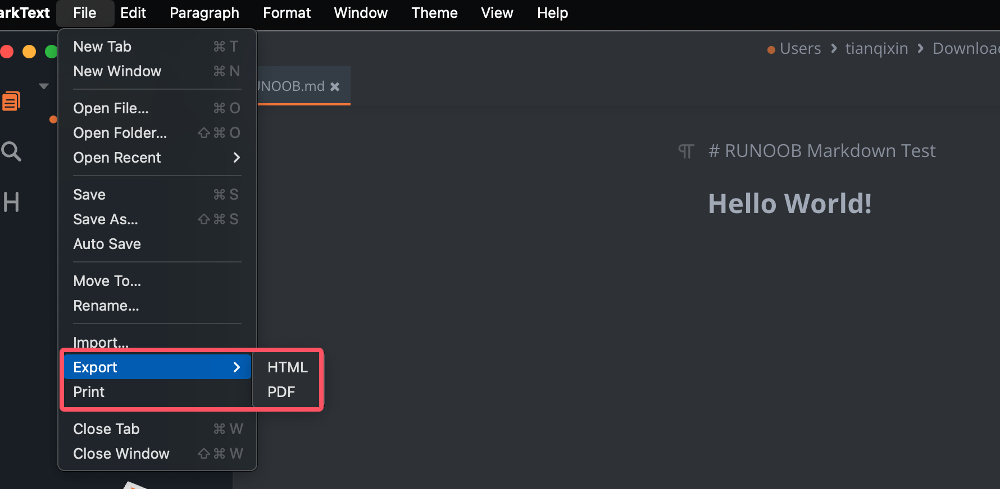
现在让我们创建第一个 Markdown 文件来开始实践：
RUNOOB.md（注意扩展名是 .md）# 我的第一个 Markdown 文档 这是我学习 Markdown 的开始。 ## 学习目标 - 掌握基本语法 - 了解应用场景 - 能够独立创作文档 ## 今天的感受 学习 Markdown 比我想象的**简单**，我对接下来的学习充满*期待*！ --- > 学习是一个持续的过程，每一小步都是进步。
如果使用 VS Code 等编辑器，按 Ctrl+Shift+V 打开预览面板，也可以点击右上角的预览图标：
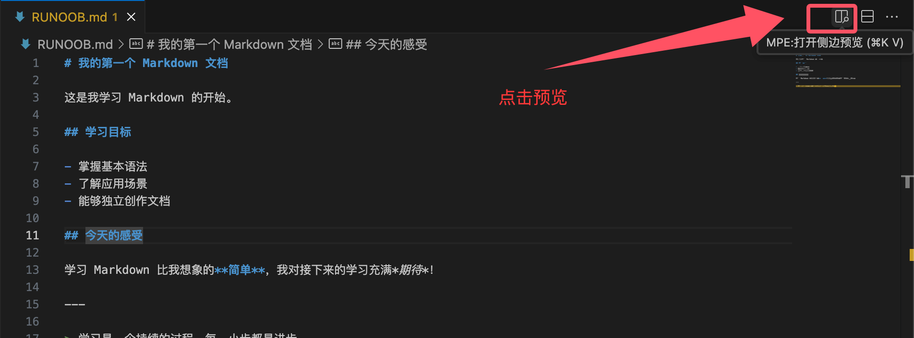
效果如下：
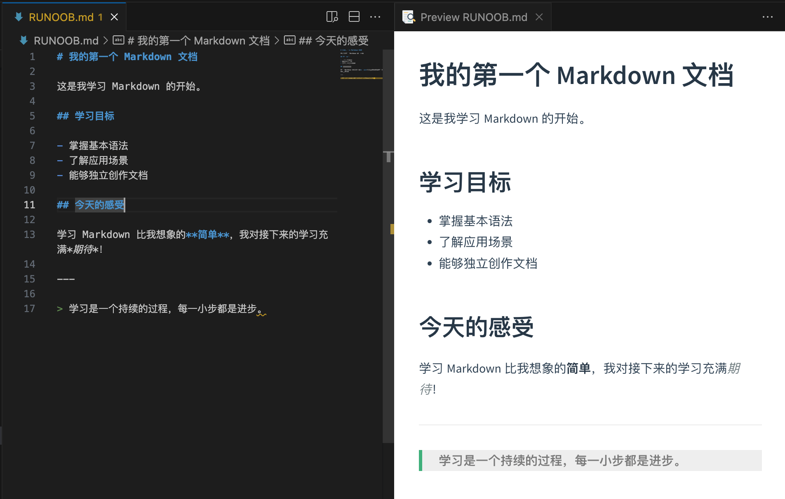
尝试修改文件内容：
# 号）通过这个简单的练习，你已经创建了第一个 Markdown 文档，并体验了基本的语法效果。
记住，学习 Markdown 最好的方法就是实践。在阅读教程的同时，不断地在编辑器中尝试各种语法，观察它们的渲染效果。随着实践的增加，你会发现 Markdown 的简洁和强大。
Markdown 标题有两种格式。
= 和 - 标记语法格式如下：
我展示的是一级标题 ================= 我展示的是二级标题 -----------------
显示效果如下图：
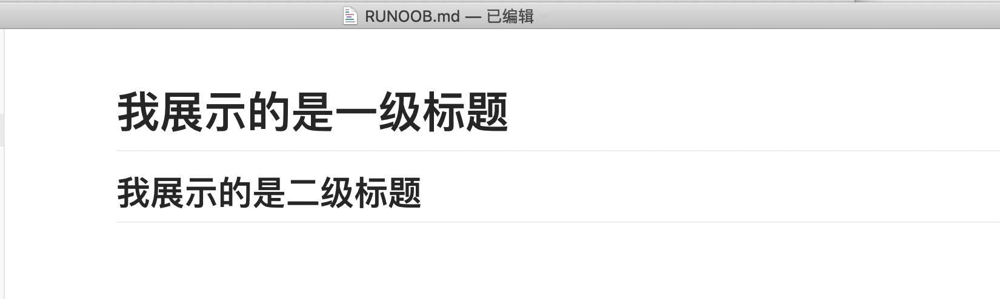
Markdown 使用 # 号来创建标题，这是从 HTML 的 <h1> 到 <h6> 标签概念演化而来的。
使用 # 号可表示 1-6 级标题，一级标题对应一个 # 号，二级标题对应两个 # 号，以此类推。
# 一级标题 ## 二级标题 ### 三级标题 #### 四级标题 ##### 五级标题 ###### 六级标题
显示效果如下图：
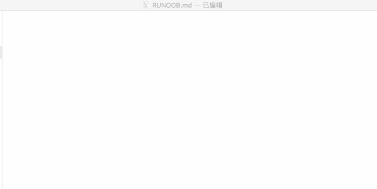
重要注意事项：
符号与文字间的空格：# 号和标题文字之间必须有一个空格。这是标准的 Markdown 语法要求。
# 正确写法 #错误写法
行首位置：# 号必须在行首，前面不能有其他字符（空格或制表符）。
唯一的一级标题：在一个文档中，通常只使用一个一级标题作为文档的主标题，这符合良好的文档结构规范。
标题的层次结构应该遵循逻辑顺序，不应该跳级使用。良好的标题结构就像一本书的目录：
推荐的层次结构：
# 主题：人工智能概述 ## 第一部分：基础概念 ### 什么是人工智能 ### 发展历史 #### 早期发展（1950-1980） #### 现代发展（1980至今） ## 第二部分：应用领域 ### 自然语言处理 ### 计算机视觉 ### 机器学习 #### 监督学习 #### 无监督学习 #### 强化学习
避免的错误结构：
# 主标题 ### 直接跳到三级标题（不推荐） ## 然后才是二级标题
自动编号 vs 手动编号：
许多 Markdown 处理器和编辑器支持自动生成标题编号，因此在源码中通常不需要手动添加编号：
# 引言 ## 背景 ## 目标 # 方法论 ## 数据收集 ## 分析方法
标题锚点：
大多数 Markdown 处理器会自动为标题创建锚点（anchor），便于页面内跳转：
[跳转到方法论部分](#方法论)
标题长度建议：
Markdown 段落没有特殊的格式，直接编写文字就好，段落的换行是使用两个以上空格加上回车。
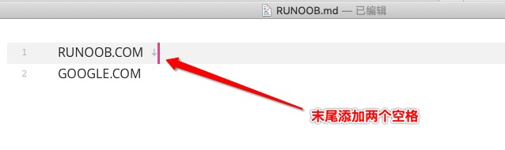
当然也可以在段落后面使用一个空行来表示重新开始一个段落。
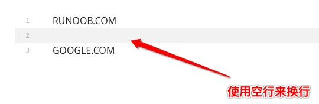
文本强调是写作中的重要技巧，Markdown 提供了简洁的方式来实现粗体和斜体效果。
Markdown 可以使用以下几种字体：粗体和斜体。
粗体语法：使用两个星号 ** 或两个下划线 __ 包围文字：
这是**粗体文字**使用星号 这是__粗体文字__使用下划线
斜体语法：使用一个星号 * 或一个下划线 _ 包围文字：
这是*斜体文字*使用星号 这是_斜体文字_使用下划线
粗斜体组合：使用三个星号 *** 或三个下划线 ___。
*斜体文本* _斜体文本_ **粗体文本** __粗体文本__ ***粗斜体文本*** ___粗斜体文本___
显示效果如下所示：
混合使用技巧：
这段文字包含**粗体**、*斜体*和***粗斜体***的组合效果。
渲染效果如下：
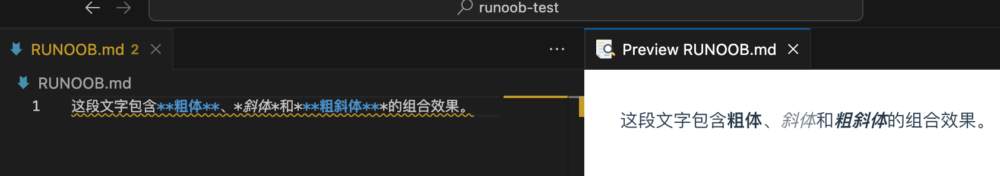
使用建议：
* 而不是下划线 _，因为星号在各种 Markdown 解析器中兼容性更好你可以在一行中用三个以上的星号、减号、底线来建立一个分隔线，行内不能有其他东西。你也可以在星号或是减号中间插入空格。下面每种写法都可以建立分隔线：
*** * * * ***** - - - ----------
显示效果如下所示：
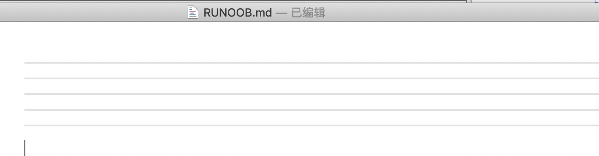
如果段落上的文字要添加删除线，只需要在文字的两端加上两个波浪线 ~~ 即可，实例如下：
RUNOOB.COM GOOGLE.COM ~~BAIDU.COM~~
显示效果如下所示：
下划线可以通过 HTML 的 <u> 标签来实现：
<u>带下划线文本</u>
显示效果如下所示：
脚注是对文本的补充说明。
Markdown 脚注的格式如下:
[^要注明的文本]
以下实例演示了脚注的用法：
创建脚注格式类似这样 [^RUNOOB]。 [^RUNOOB]: 菜鸟教程 -- 学的不仅是技术，更是梦想！！！
演示效果如下：
行内代码用于在正文中标记代码片段、命令、变量名等：
基本语法：
使用一个反引号 ` 包围代码：
使用 `git commit` 命令提交代码 变量 `userName` 存储用户名 在终端中输入 `npm install` 安装依赖
渲染效果：
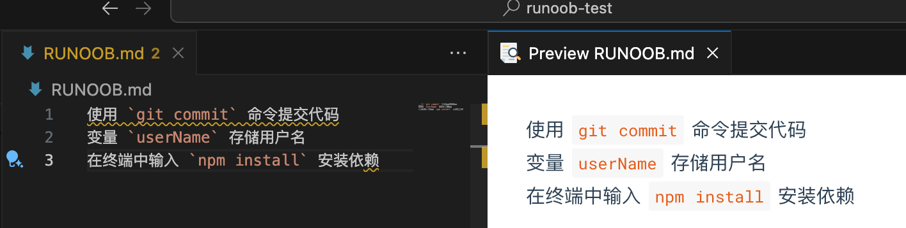
包含反引号的代码：当代码本身包含反引号时，使用两个反引号包围。
要显示反引号，使用 `` `code` `` 这样的格式
渲染效果：
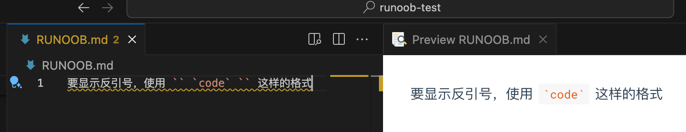
应用场景：
Ctrl+C）文本高亮不是标准 Markdown 语法，但许多扩展支持：
常见语法（部分平台支持）：
这是==高亮文本==
HTML 替代方案：
这是<mark>高亮文本</mark>
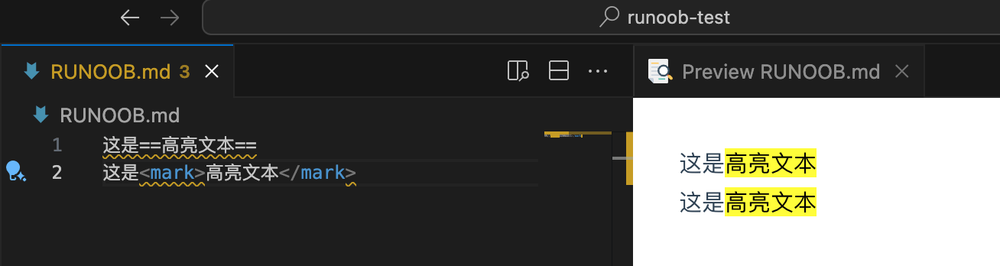
在 Markdown 中，段落是文本的基本单位，理解段落规则对于正确格式化文档至关重要。
段落基本规则：
正确的段落写法：
这是第一个段落。它可以包含多个句子，内容可以很长，会自动换行显示。 这是第二个段落。注意上面有一个空行分隔。 这是第三个段落。
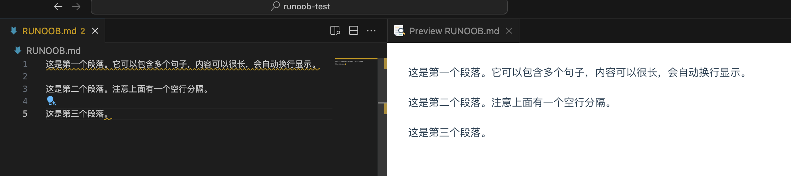
常见错误：
这是第一段
这是第二段（错误：没有空行分隔）
这是缩进段落（错误：不应该缩进）
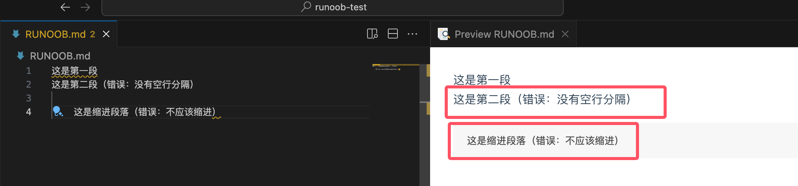
有时需要在不创建新段落的情况下换行，Markdown 提供了几种方法：
方法一：行尾两个空格
在行尾添加两个或更多空格，然后按回车：
第一行内容（这里有两个空格） 第二行内容
方法二：HTML 换行标签
第一行内容<br> 第二行内容
方法三：反斜杠（部分解析器支持）
第一行内容\ 第二行内容
实际应用示例：
地址：北京市朝阳区 电话：010-12345678 邮箱：admin@runoob.com 诗歌示例： 床前明月光， 疑是地上霜。 举头望明月， 低头思故乡。
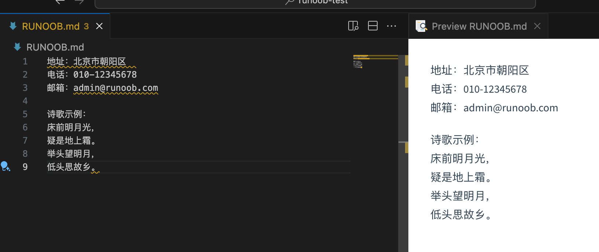
空行在 Markdown 中扮演重要角色：
分隔段落：
第一段内容 第二段内容
分隔不同元素：
# 标题 段落内容 - 列表项1 - 列表项2 另一段内容
最佳实践建议：
Markdown 支持有序列表和无序列表。
无序列表使用星号(*)、加号(+)或是减号(-)作为列表标记，这些标记后面要添加一个空格，然后再填写内容：
* 第一项 * 第二项 * 第三项 + 第一项 + 第二项 + 第三项 - 第一项 - 第二项 - 第三项
显示结果如下：
选择建议：
有序列表用于展示有顺序要求的步骤或项目。
有序列表使用数字并加上 . 号来表示，如：
1. 第一项 2. 第二项 3. 第三项
显示结果如下：
Markdown 会自动修正数字顺序：
1. 第一项 3. 第二项（实际显示为2） 7. 第三项（实际显示为3）
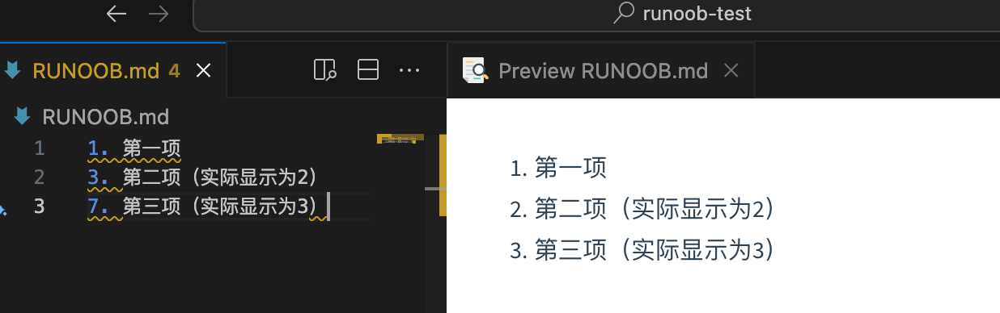
从指定数字开始：
5. 第五项 6. 第六项 7. 第七项
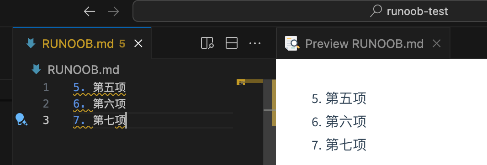
列表可以嵌套使用，创建多层次的结构：
无序列表嵌套：
- 水果
- 苹果
- 红苹果
- 绿苹果
- 香蕉
- 橙子
- 蔬菜
- 胡萝卜
- 白菜
有序列表嵌套：
1. 准备阶段 1. 收集资料 2. 制定计划 2. 执行阶段 1. 开始实施 2. 监控进度 3. 总结阶段
混合嵌套：
1. 主要任务
- 子任务A
- 子任务B
1. 详细步骤1
2. 详细步骤2
- 子任务C
2. 次要任务
列表混合嵌套只需在子列表中的选项前面添加两个或四个空格即可：
1. 第一项：
- 第一项嵌套的第一个元素
- 第一项嵌套的第二个元素
2. 第二项：
- 第二项嵌套的第一个元素
- 第二项嵌套的第二个元素
显示结果如下：
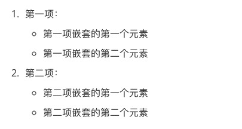
嵌套规则：
任务列表是 GitHub 风格 Markdown 的扩展功能，现在被广泛支持：
基本语法：
- [ ] 未完成的任务 - [x] 已完成的任务 - [ ] 另一个未完成的任务
渲染效果：
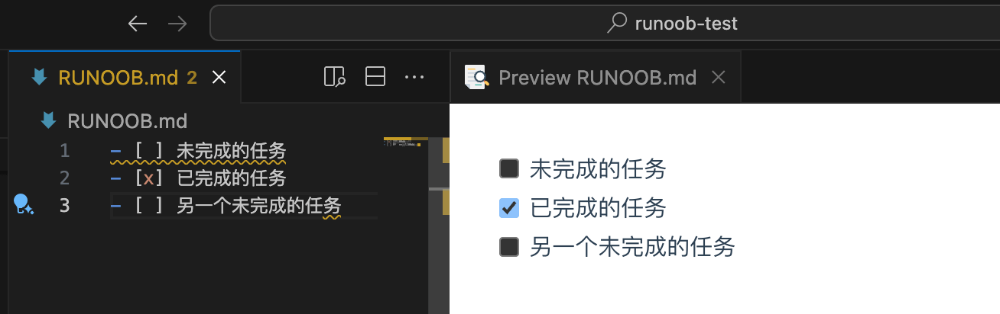
实际应用示例：
## 项目待办清单 ### 设计阶段 - [x] 需求分析 - [x] 原型设计 - [ ] UI 设计 ### 开发阶段 - [ ] 前端开发 - [x] 页面布局 - [ ] 交互功能 - [ ] 响应式适配 - [ ] 后端开发 - [ ] 数据库设计 - [ ] API 开发 - [ ] 性能优化 ### 测试阶段 - [ ] 单元测试 - [ ] 集成测试 - [ ] 用户验收测试
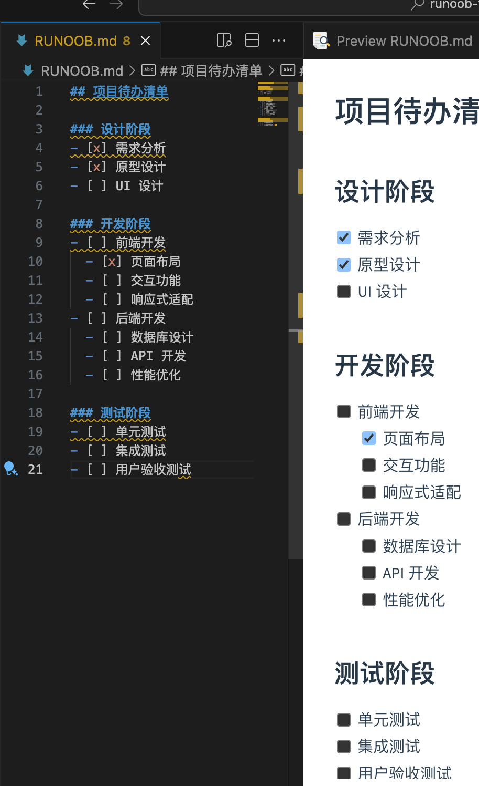
使用技巧：
[ ] 和 [x]高级列表技巧：
列表项中包含多段内容：
1. 第一项 这是第一项的详细说明，需要与列表项对齐缩进。 还可以包含第二段内容。 2. 第二项 > 可以在列表项中使用引用
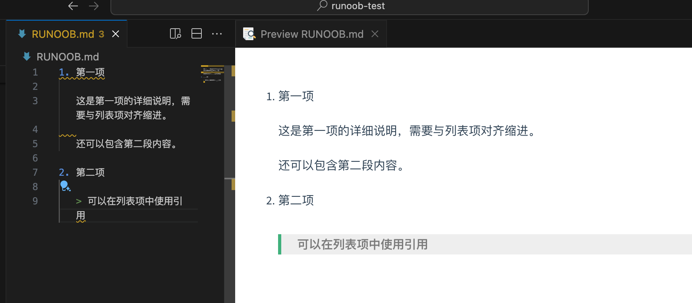
列表项中的换行：
- 这是一个很长的列表项， 需要换行显示，注意第二行需要与第一行对齐 - 另一个列表项
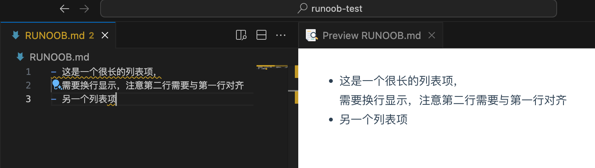
通过掌握这些基础语法，你已经能够创建结构清晰、格式规范的 Markdown 文档了。这些语法是日常写作中最常用的，熟练掌握它们将大大提高你的文档编写效率。
引用块用于突出显示重要信息、引用他人观点或创建视觉层次。
基本语法：
Markdown 区块引用是在段落开头使用 > 符号 ，然后后面紧跟一个空格符号：
> 区块引用 > 菜鸟教程 > 学的不仅是技术更是梦想
显示结果如下：
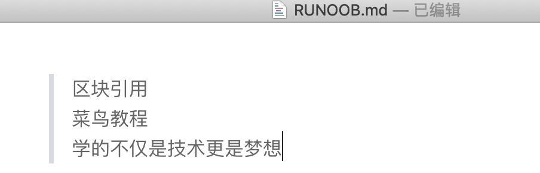
多行引用：
> 这是引用的第一行。 > 这是引用的第二行。 > > 这是引用的第二段。
简化写法：
只在第一行使用 > ，其余行会自动包含在引用中：
> 这是一个长引用， 包含多行内容， 只需要在第一行使用 > 符号。
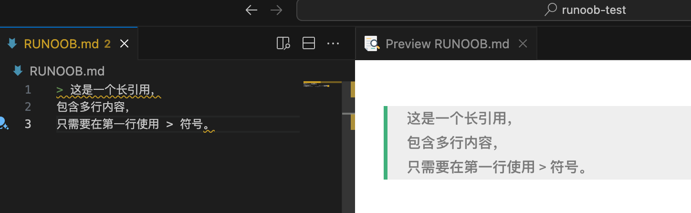
另外区块是可以嵌套的，一个 > 符号是最外层，两个 > 符号是第一层嵌套，以此类推：
> 最外层 > > 第一层嵌套 > > > 第二层嵌套
显示结果如下：
实际应用示例：
> **用户反馈**：这个功能很有用！ > > > **开发团队回复**：感谢您的反馈，我们会继续优化。 > > > > > **项目经理补充**：预计下个版本会有更多改进。
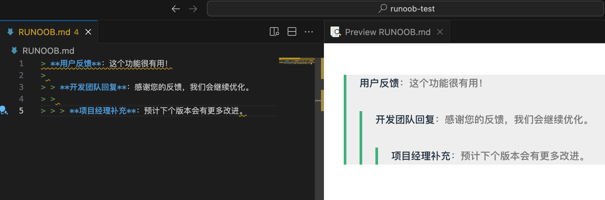
区块中使用列表实例如下：
> 区块中使用列表 > 1. 第一项 > 2. 第二项 > + 第一项 > + 第二项 > + 第三项
显示结果如下：
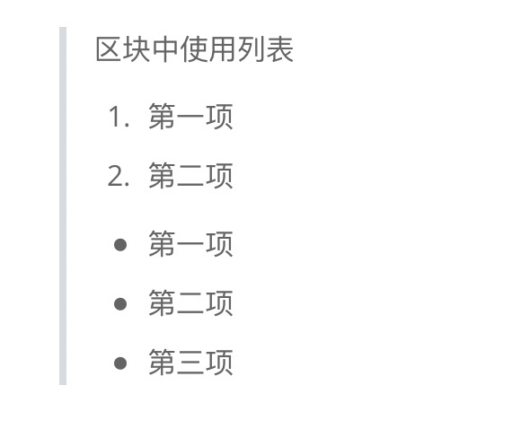
如果要在列表项目内放进区块，那么就需要在 > 前添加四个空格的缩进。
列表中使用区块实例如下：
* 第一项
> 菜鸟教程
> 学的不仅是技术更是梦想
* 第二项
显示结果如下：
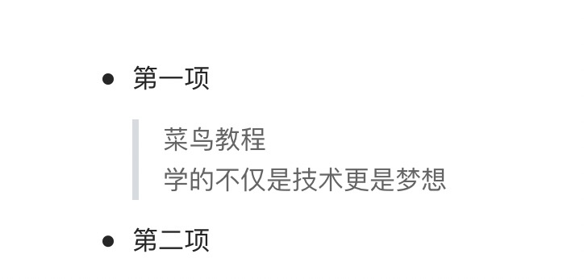
引用块内可以包含几乎所有其他 Markdown 元素。
包含标题：
> ## 重要提醒 > > 请在操作前仔细阅读文档，避免数据丢失。
包含列表：
> ### 注意事项 > > 1. 备份重要数据 > 2. 检查系统兼容性 > 3. 准备回滚方案 > > - 测试环境验证 > - 生产环境部署 > - 监控系统状态
包含代码：
> 要运行这个脚本，请使用以下命令： > > ```bash > npm install > npm start > ``` > > 执行后会在 `http://localhost:3000` 看到结果。
包含链接和图片：
> 📚 **推荐阅读** > > 详细信息请参考 [官方文档](https://example.com) > > 
名言警句引用
> "在软件开发中，最昂贵的错误就是构建正确的系统错误的方式，或者构建错误的系统正确的方式。" > > — Barry Boehm，软件工程专家
成功提示：
> ✅ **成功** > > 配置已保存并生效。系统将在下次重启时应用新设置。
警告信息：
> ⚠️ **警告** > > 此操作不可逆转，请确保已备份重要数据。
错误信息：
> ❌ **错误** > > 连接数据库失败，请检查网络连接或联系系统管理员。
信息提示：
> ℹ️ **提示** > > 首次使用需要进行账户验证，验证邮件已发送到您的邮箱。
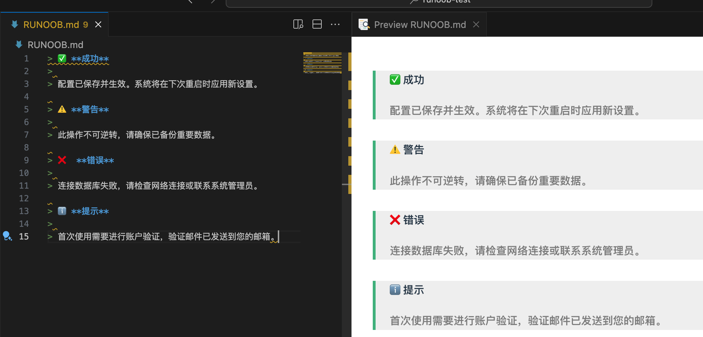
章节摘要：
# 第一章：项目概述 > **本章要点** > > - 了解项目背景和目标 > - 掌握核心功能特性 > - 熟悉技术架构设计
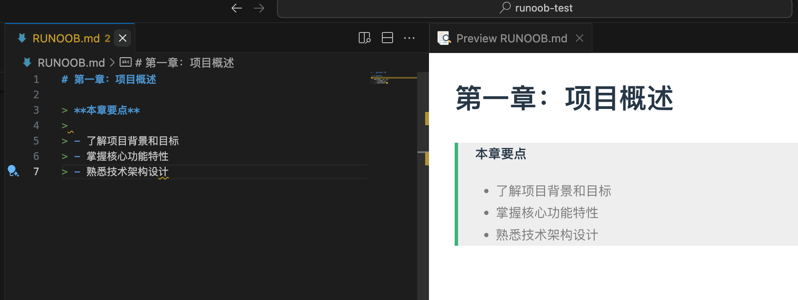
版本更新说明：
## v2.1.0 更新内容 > **重大变更** > > ⚠️ API 接口路径已调整，旧版本客户端需要更新 > > 详见 [迁移指南](./migration-guide.md)
Markdown 提供了多种方式来展示代码，从简单的行内代码到复杂的代码块，满足不同场景下的代码展示需求。
如果是段落上的一个函数或片段的代码可以用反引号把它包起来（`），例如：
`printf()` 函数
显示结果如下：
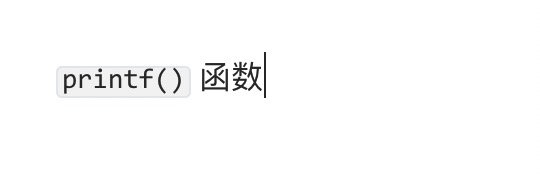
常见用法示例：
console.log() 输出信息userName 变量npm install 安装依赖Ctrl+C 复制内容index.html 文件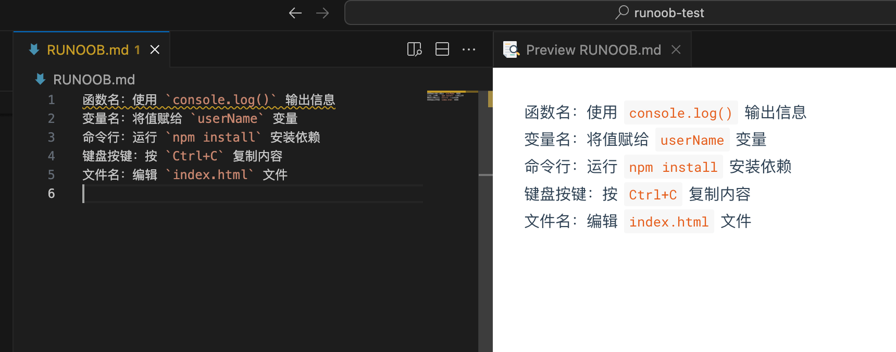
当需要在行内代码中显示反引号或其他特殊字符时，需要进行转义处理。
显示反引号的方法：
使用双反引号包围单反引号：
``使用 `反引号` 包围代码``
渲染效果：
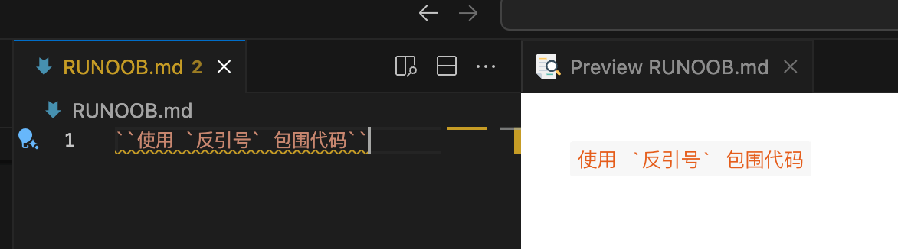
使用多个反引号包围：
```包含 `` 双反引号的代码```
渲染效果：
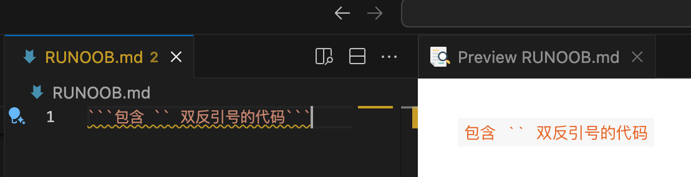
其他特殊字符处理：
<div> 元素x + y = z 表示空格代码区块使用 4 个空格或者一个制表符（Tab 键）。
语法格式：
正常文本段落
这是缩进式代码块
每行前面有四个空格
保持代码的原始格式
继续正常文本
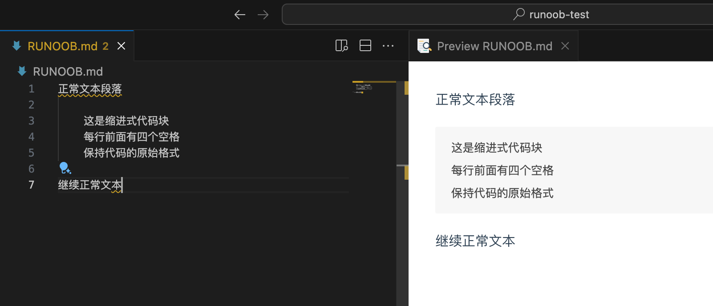
实例如下：
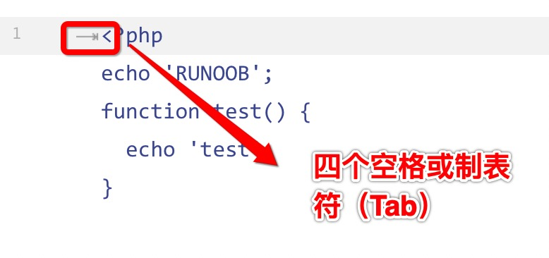
显示结果如下：
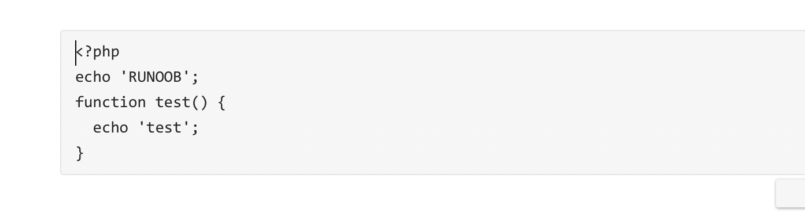
你也可以用 ``` 包裹一段代码，并指定一种语言（也可以不指定）：
``` 多行代码内容 可以包含空行 保持原有缩进 ```
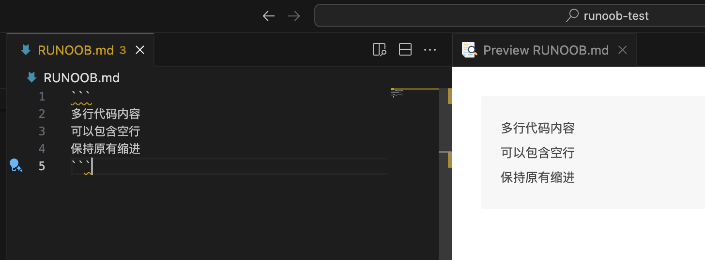
三反引号（```）是最常用的代码块语法，支持语法高亮和多行代码展示。
```javascript
$(document).ready(function () {
alert('RUNOOB');
});
```
显示结果如下：
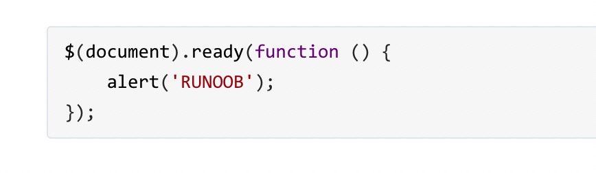
注意事项：
在三反引号后添加语言标识符可以启用语法高亮功能。
常用语言标识符列表：
javascript / js - JavaScriptpython / py - Python html - HTMLcss - CSSsql - SQLjson - JSONxml - XMLyaml / yml - YAMLbash / shell - Shell脚本java - Javacpp / c++ - C++csharp / c# - C#php - PHPruby / rb - Rubygo - Go语言rust - Rusttypescript / ts - TypeScriptJavaScript:
```javascript
const users = [
{ name: "Alice", age: 25 },
{ name: "Bob", age: 30 }
];
const adults = users.filter(user => user.age >= 18);
console.log(adults);
```
Python:
```python
def calculate_area(radius):
"""计算圆的面积"""
import math
return math.pi * radius ** 2
# 使用函数
area = calculate_area(5)
print(f"圆的面积是: {area:.2f}")
```
SQL:
```sql SELECT u.name, u.email, COUNT(o.id) as order_count FROM users u LEFT JOIN orders o ON u.id = o.user_id WHERE u.created_at >= '2024-01-01' GROUP BY u.id, u.name, u.email ORDER BY order_count DESC LIMIT 10; ```
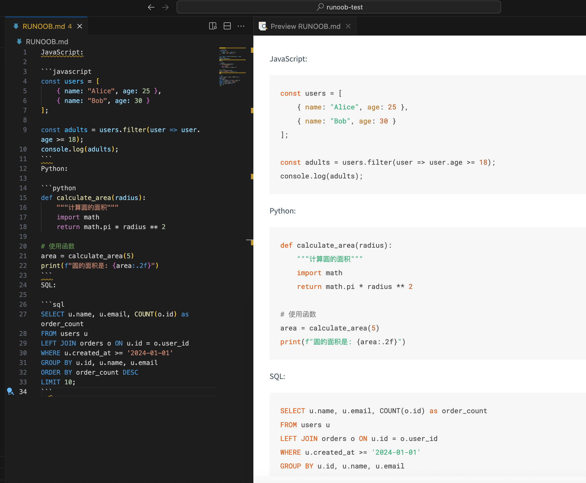
某些 Markdown 渲染器支持显示行号，通过特定的语法或配置实现。
语法示例（部分支持）：
```javascript {.line-numbers}
function fibonacci(n) {
if (n <= 1) return n;
return fibonacci(n - 1) + fibonacci(n - 2);
}
console.log(fibonacci(10));
```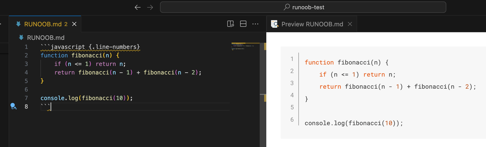
或者使用：
```javascript showLineNumbers
const numbers = [1, 2, 3, 4, 5];
const doubled = numbers.map(x => x * 2);
const sum = doubled.reduce((a, b) => a + b, 0);
console.log(`总和: ${sum}`);
```
用于显示代码的添加、删除或修改，常用于展示版本控制中的变更。
Diff 语法：
```diff
function calculateTotal(items) {
- let total = 0;
+ let total = 0.0;
for (let item of items) {
- total += item.price;
+ total += parseFloat(item.price);
}
+ // 保留两位小数
+ total = Math.round(total * 100) / 100;
return total;
}
```
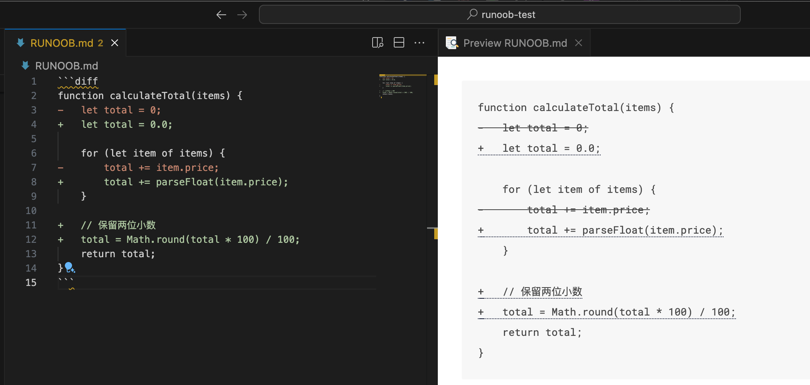
Git 风格的差异显示：
```diff
@@ -1,5 +1,8 @@
function greetUser(name) {
- console.log("Hello " + name);
+ if (!name) {
+ throw new Error("Name is required");
+ }
+ console.log(`Hello, ${name}!`);
}
```语言特定的差异对比：
```javascript
// 之前的代码
const oldFunction = () => {
var x = 10; // ❌ 使用 var
console.log("Value: " + x); // ❌ 字符串拼接
}
// 改进后的代码
const newFunction = () => {
const x = 10; // ✅ 使用 const
console.log(`Value: ${x}`); // ✅ 模板字符串
}
```
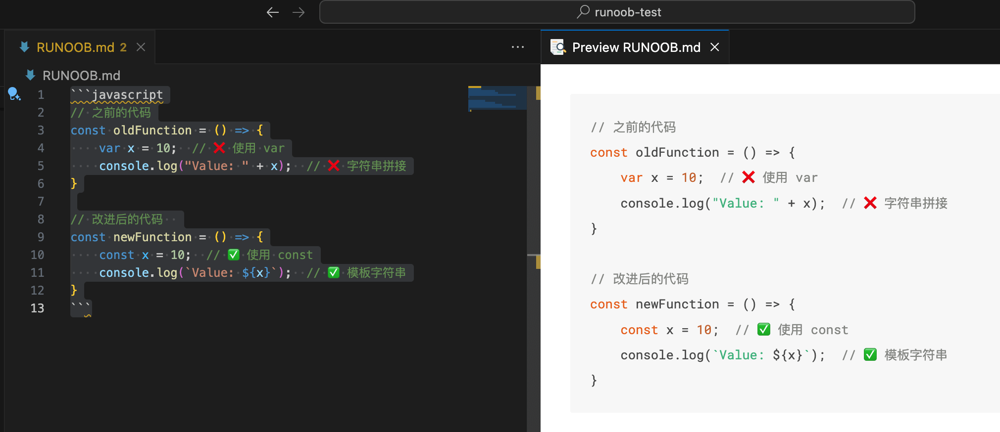
链接是使 Markdown 文档具有交互性的关键元素。
掌握链接语法能让你创建内容丰富、易于导航的文档。
链接使用方法如下：
[链接名称](链接地址) [链接文字](链接地址 "可选的标题")
或者:
<链接地址>
一个简单的链接：
这是一个链接 [菜鸟教程](https://www.runoob.com)
显示结果如下：
直接使用链接地址：
<https://www.runoob.com>
显示结果如下：
设置可选标题：
这是一个链接 [菜鸟教程](https://www.runoob.com) 欢迎访问 [GitHub](https://github.com) 官网 这是 [百度搜索](https://www.baidu.com "百度一下，你就知道")
显示结果如下：
链接标题的作用：
邮箱链接：
markdown联系我：[发送邮件](mailto:example@email.com) 电话联系：[拨打电话](tel:+86-138-0013-8000)
参考式链接将链接定义与使用分离，让文档更整洁，特别适合长文档或需要多次引用相同链接的情况。
基本语法：
markdown[链接文字][参考标签] [参考标签]: URL "可选标题"
我们可以通过变量来设置一个链接，变量赋值在文档末尾进行：
这个链接用 1 作为网址变量 [Google][1] 这个链接用 runoob 作为网址变量 [Runoob][runoob] 然后在文档的结尾为变量赋值（网址） [1]: http://www.google.com/ [runoob]: http://www.runoob.com/
显示结果如下：
简化写法：
当参考标签与链接文字相同时，可以省略第二个方括号：
markdown 我喜欢使用 [GitHub][] 来管理代码。 [GitHub]: https://github.com
参考链接的优势：
组织技巧：
markdown# 学习资源推荐 ## 在线教程 - [MDN Web Docs][mdn] - 权威的 Web 技术文档 - [RUNOOB][rnb] - 适合初学者的教程网站 - [freeCodeCamp][fcc] - 免费的编程学习平台 ## 代码托管 - [GitHub][github] - 最受欢迎的代码托管服务 - [GitLab][gitlab] - 企业级的代码管理平台 <!-- 链接定义区域 --> [mdn]: https://developer.mozilla.org/ [rnb]: https://www.runoob.com/ [fcc]: https://www.freecodecamp.org/ [github]: https://github.com/ [gitlab]: https://gitlab.com/
现代 Markdown 解析器通常支持自动识别 URL 和邮箱地址：
URL 自动识别：
markdown直接输入网址：https://www.example.com 用尖括号包围：<https://www.example.com>
邮箱自动识别：
markdown联系邮箱：example@email.com 或者：<example@email.com>
注意事项：
锚点链接用于在同一文档内跳转，特别适合长文档的导航：
跳转到标题：
## 目录 - [第一章：介绍](#第一章介绍) - [第二章：安装](#第二章安装) - [第三章：使用方法](#第三章使用方法) # 第一章：介绍 这里是介绍内容... # 第二章：安装 这里是安装说明... # 第三章：使用方法 这里是使用说明...
锚点规则：
手动创建锚点：
<a id="custom-anchor"></a> ## 自定义锚点位置 [跳转到自定义位置](#custom-anchor)
页面顶部返回链接：
[回到顶部](#)
图片能让文档更加生动和易于理解。
Markdown 的图片语法简洁而灵活。
Markdown 图片语法格式如下：
 
相对路径示例：
  
绝对路径示例：
 
路径使用建议：
直接引用网络图片：
 
显示结果如下：
当然，你也可以像网址那样对图片网址使用变量:
这个链接用 1 作为网址变量 [RUNOOB][1]. 然后在文档的结尾为变量赋值（网址） [1]: https://static.jyshare.com/images/runoob-logo.png
显示结果如下：
Markdown 还没有办法指定图片的高度与宽度，如果你需要的话，你可以使用普通的 <img> 标签。
<img src="https://static.jyshare.com/images/runoob-logo.png" width="50%">
显示结果如下：
使用 CDN 服务：
 
网络图片注意事项：
Alt 文本（替代文字）在图片无法显示时提供替代信息，同时对无障碍访问和 SEO 很重要：
好的 alt 文本示例：
  
避免的 alt 文本：
 // 太简单，没有描述性  // 完全没有 alt 文本  // 不描述图片内容
alt 文本最佳实践：
标准 Markdown 不支持直接控制图片尺寸，但可以使用 HTML 标签。
使用 HTML img 标签：
<img src="image.jpg" alt="描述文字" width="300" height="200"> <img src="image.jpg" alt="描述文字" width="50%"> <img src="image.jpg" alt="描述文字" style="width: 300px; height: auto;">
响应式图片：
<img src="image.jpg" alt="描述文字" style="max-width: 100%; height: auto;">
图片对齐：
<!-- 居中对齐 --> <div align="center"> <img src="image.jpg" alt="居中图片" width="400"> </div> <!-- 左对齐（默认） --> <img src="image.jpg" alt="左对齐图片" style="float: left; margin-right: 20px;"> <!-- 右对齐 --> <img src="image.jpg" alt="右对齐图片" style="float: right; margin-left: 20px;">
将图片作为链接的可点击元素。
基本语法：
[](链接URL)
实际示例：
[](https://github.com/username/project) [](https://example.com "点击访问官网")
常见应用场景：
<!-- 项目徽章 --> [](https://travis-ci.org/user/repo) [](https://opensource.org/licenses/MIT) <!-- 应用商店下载 --> [](https://apps.apple.com/app/your-app) [](https://play.google.com/store/apps/details?id=com.yourapp)
相对路径的优势：
<!-- 项目结构 -->
project/
├── README.md
├── docs/
│ ├── guide.md
│ └── images/
│ └── screenshot.png
└── assets/
└── logo.png
<!-- 在 README.md 中 -->

<!-- 在 docs/guide.md 中 -->


路径规划建议：
方法一：HTML + CSS
<div style="text-align: center;"> <img src="image.jpg" alt="居中图片" style="max-width: 100%;"> </div>
方法二：使用 HTML 对齐属性
<p align="center"> <img src="image.jpg" alt="居中图片" width="400"> </p>
方法三：创建图片画廊
<div style="display: flex; justify-content: space-around; flex-wrap: wrap;"> <img src="image1.jpg" alt="图片1" style="width: 30%; margin: 10px;"> <img src="image2.jpg" alt="图片2" style="width: 30%; margin: 10px;"> <img src="image3.jpg" alt="图片3" style="width: 30%; margin: 10px;"> </div>
实用的图片展示模板：
## 产品展示
### 主要功能
<table>
<tr>
<td align="center">
<img src="./images/feature1.png" width="200" alt="功能1">
<br>
<strong>智能识别</strong>
<br>
<sub>AI驱动的图像识别技术</sub>
</td>
<td align="center">
<img src="./images/feature2.png" width="200" alt="功能2">
<br>
<strong>快速处理</strong>
<br>
<sub>毫秒级响应速度</sub>
</td>
</tr>
</table>
### 界面预览
| 移动端 | 桌面端 |
|:---:|:---:|
|  |  |
| 响应式设计，完美适配 | 大屏体验，功能齐全 |
性能优化建议：
常见问题及解决方案：
调试技巧：
<!-- 测试链接是否有效 --> 测试链接：[点击测试](https://httpbin.org/get) <!-- 测试图片路径 -->  <!-- 如果不显示，尝试绝对路径或检查文件名大小写 -->
通过掌握链接和图片的各种用法，你可以创建内容丰富、导航清晰的 Markdown 文档。这些技能对于编写技术文档、项目说明和在线内容都非常重要。
表格和引用是 Markdown 中重要的内容组织工具。
表格能够清晰地展示结构化数据，而引用则用于突出重要信息或引用他人观点。
Markdown 制作表格使用 | 来分隔不同的单元格，使用 - 来分隔表头和其他行。
语法格式如下：
| 表头 | 表头 | | ---- | ---- | | 单元格 | 单元格 | | 单元格 | 单元格 |
以上代码显示结果如下：
语法要点：
---| 是可选的，但建议保留以提高可读性我们可以设置表格的对齐方式：
实例如下：
| 左对齐 | 右对齐 | 居中对齐 | | :-----| ----: | :----: | | 单元格 | 单元格 | 单元格 | | 单元格 | 单元格 | 单元格 |
以上代码显示结果如下：
表格单元格内可以使用大部分 Markdown 语法：
| 功能 | 描述 | 状态 | |------|------|:----:| | **用户登录** | 支持邮箱和手机号登录 | ✅ | | *密码重置* | 通过邮箱重置密码 | ⚠️ | | `API接口` | RESTful API 设计 | ✅ | | [文档链接](https://example.com) | 查看详细文档 | 📖 |
当单元格内容较长时，可以使用以下技巧：
换行处理：
| 项目 | 详细说明 | |------|----------| | 需求分析 | 1. 收集用户需求<br>2. 分析业务场景<br>3. 确定功能范围 | | 技术选型 | 前端：React + TypeScript<br>后端：Node.js + Express<br>数据库：MongoDB |
缩写和链接：
| 技术栈 | 说明 | 官网 | |--------|------|------| | React | 用户界面库 | [链接](https://reactjs.org) | | Vue.js | 渐进式框架 | [链接](https://vuejs.org) | | Angular | 完整的框架 | [链接](https://angular.io) |
某些字符在表格中有特殊含义，需要转义：
| 字符 | 转义方法 | 示例 | |------|----------|------| | 竖线 | `\|` | 显示 \| 符号 | | 反斜杠 | `\\` | 显示 \\ 符号 | | HTML | 直接使用 | <code><div></code> |
使用 Emoji 和符号
| 状态 | 图标 | 说明 | |:----:|:----:|------| | 完成 | ✅ | 任务已完成 | | 进行中 | 🔄 | 正在处理 | | 待处理 | ⏳ | 等待开始 | | 错误 | ❌ | 出现问题 | | 警告 | ⚠️ | 需要注意 |
财务数据表格：
| 月份 | 收入 | 支出 | 利润 | 增长率 | |:----:|-----:|-----:|-----:|-------:| | 1月 | ¥50,000 | ¥35,000 | ¥15,000 | - | | 2月 | ¥55,000 | ¥38,000 | ¥17,000 | +13.3% | | 3月 | ¥62,000 | ¥42,000 | ¥20,000 | +17.6% | | **总计** | **¥167,000** | **¥115,000** | **¥52,000** | **+31.1%** |
技术对比表格：
| 特性 | React | Vue.js | Angular | 评分 | |------|:-----:|:------:|:-------:|:----:| | 学习曲线 | 中等 | 简单 | 复杂 | Vue ⭐⭐⭐ | | 性能表现 | 优秀 | 优秀 | 良好 | 平分 ⭐⭐⭐ | | 生态系统 | 丰富 | 成长中 | 完整 | React ⭐⭐⭐ | | 企业支持 | Facebook | 社区 | Google | Angular ⭐⭐⭐ |
对于复杂表格，可以考虑分解为多个简单表格。
移动端友好的设计：
### 基本信息 | 项目 | 值 | |------|-----| | 姓名 | 张三 | | 年龄 | 25 | | 职业 | 工程师 | ### 联系方式 | 类型 | 信息 | |------|------| | 邮箱 | zhang@example.com | | 电话 | 138-0013-8000 | | 地址 | 北京市朝阳区 |
不在 Markdown 涵盖范围之内的标签，都可以直接在文档里面用 HTML 撰写。
目前支持的 HTML 元素有：<kbd> <b> <i> <em> <sup> <sub> <br>等 ，如：
使用 <kbd>Ctrl</kbd>+<kbd>Alt</kbd>+<kbd>Del</kbd> 重启电脑
输出结果为：
Markdown 使用了很多特殊符号来表示特定的意义，如果需要显示特定的符号则需要使用转义字符，Markdown 使用反斜杠转义特殊字符：
**文本加粗** \*\* 正常显示星号 \*\*
输出结果为：
Markdown 支持以下这些符号前面加上反斜杠来帮助插入普通的符号：
\ 反斜线
` 反引号
* 星号
_ 下划线
{} 花括号
[] 方括号
() 小括号
# 井字号
+ 加号
- 减号
. 英文句点
! 感叹号
Markdown Preview Enhanced 使用 KaTeX 或者 MathJax 来渲染数学表达式。
KaTeX 拥有比 MathJax 更快的性能，但是它却少了很多 MathJax 拥有的特性。你可以查看 KaTeX supported functions/symbols 来了解 KaTeX 支持那些符号和函数。
默认下的分隔符：
$...$ 或者 \(...\) 中的数学表达式将会在行内显示。$$...$$ 或者 \[...\] 或者 ```math 中的数学表达式将会在块内显示。
$$
\begin{Bmatrix}
a & b \\
c & d
\end{Bmatrix}
$$
$$
\begin{CD}
A @>a>> B \\
@VbVV @AAcA \\
C @= D
\end{CD}
$$
输出结果为：
分割线用于在视觉上分隔文档的不同部分，创建清晰的内容层次。
Markdown 支持三种方式创建水平分割线：
1、使用三个连字符：
---
2、使用三个星号：
***
3、使用三个下划线：
___
所有三种方式的渲染效果相同：
可以使用更多的符号，但三个是最小要求：
----- ***** _____
空格的影响：符号之间可以有空格。
- - - * * * _ _ _
# 第一章：概述 内容描述... --- # 第二章：安装 安装步骤... --- # 第三章：使用 使用说明...
## 产品特性 ### 核心功能 - 功能A - 功能B - 功能C --- ### 技术优势 - 优势1 - 优势2 - 优势3 --- ### 应用场景 场景描述... 页面底部分隔 markdown正文内容... --- ## 相关链接 - [官方网站](https://example.com) - [技术文档](https://docs.example.com) - [社区论坛](https://forum.example.com) --- *最后更新：2024年3月15日*
项目介绍的正文内容... --- > **免责声明** > > 本软件按"原样"提供，不提供任何形式的明示或暗示担保。 --- 继续其他内容...
避免过度使用：
# 标题 内容1 --- （不必要的分割线） ## 子标题 内容2
合理的使用：
# 项目文档 项目简介... --- ## 安装指南 安装步骤... --- ## 使用说明 使用方法... --- ## 常见问题 FAQ内容...
与其他元素的配合：
## 版本历史 ### v2.0.0 (2024-03-15) - 新增功能A - 修复问题B --- ### v1.5.0 (2024-02-01) - 新增功能C - 优化性能 --- ### v1.0.0 (2024-01-01) - 初始版本发布
在 Markdown 中，数学公式通过 LaTeX 语法来表示。LaTeX 是一个强大的排版系统，特别适用于包含复杂数学公式的文档。
\ 开头，如 \alpha、\sum{} 包围，如 \frac{a}{b}_，如 x_1^，如 x^2x_{i+1}\alpha, \beta, \gamma % 希腊字母
\sum, \prod, \int % 求和、乘积、积分
\frac{分子}{分母} % 分数
\sqrt{表达式} % 平方根
\sqrt[n]{表达式} % n次根
行内公式使用单个美元符号 $ 包围，公式会嵌入到文本中，如：文本中的变量 $x = 5$ 和函数 $f(x) = x^2 + 2x + 1$。
文本中的变量 $x = 5$ 和函数 $f(x) = x^2 + 2x + 1$。
块级公式使用双美元符号 $$ 包围，公式会独立成行并居中显示：
E = mc^2
\int_{-\infty}^{\infty} e^{-x^2} dx = \sqrt{\pi}
$$E = mc^2$$
$$\int_{-\infty}^{\infty} e^{-x^2} dx = \sqrt{\pi}$$
使用 align 环境创建多行对齐公式：
\begin{align}
f(x) &= ax^2 + bx + c \
f'(x) &= 2ax + b \
f''(x) &= 2a
\end{align}
$$
\begin{align}
f(x) &= ax^2 + bx + c \\
f'(x) &= 2ax + b \\
f''(x) &= 2a
\end{align}
$$
+, -, \times, \div\frac{a}{b} → $\frac{a}{b}$\sqrt{x}, \sqrt[n]{x} → $\sqrt{x}$, $\sqrt[n]{x}$x^2, e^{i\pi} → $x^2$, $e^{i\pi}$=, \neq, \equiv → $=$, $\neq$, $\equiv$<, >, \leq, \geq → $<$, $>$, $\leq$, $\geq$\approx, \sim → $\approx$, $\sim$\in, \notin → $\in$, $\notin$\subset, \supset → $\subset$, $\supset$\cap, \cup → $\cap$, $\cup$\emptyset → $\emptyset$常用希腊字母及其 LaTeX 表示：
| 小写 | 大写 | LaTeX | 小写 | 大写 | LaTeX |
|---|---|---|---|---|---|
| α | Α | \alpha |
ν | Ν | \nu |
| β | Β | \beta |
ο | Ο | o |
| γ | Γ | \gamma |
π | Π | \pi |
| δ | Δ | \delta |
ρ | Ρ | \rho |
| ε | Ε | \epsilon |
σ | Σ | \sigma |
| θ | Θ | \theta |
τ | Τ | \tau |
| λ | Λ | \lambda |
φ | Φ | \phi |
| μ | Μ | \mu |
ω | Ω | \omega |
\sin, \cos, \tan\log, \ln\lim_{x \to 0}\sum_{i=1}^{n}\int_{a}^{b}\infty使用 matrix 环境：
\begin{pmatrix}
a & b \
c & d
\end{pmatrix}
$$
\begin{pmatrix}
a & b \\
c & d
\end{pmatrix}
$$
不同括号类型的矩阵：
pmatrix：圆括号 $\begin{pmatrix} a & b \ c & d \end{pmatrix}$bmatrix：方括号 $\begin{bmatrix} a & b \ c & d \end{bmatrix}$vmatrix：行列式 $\begin{vmatrix} a & b \ c & d \end{vmatrix}$图表在技术文档中非常重要，它可以帮助我们：
Mermaid 是最流行的 Markdown 图表工具之一，它允许你使用简单的文本语法生成各种图表。
```mermaid
graph TD
A[开始] --> B{条件判断}
B -->|Yes| C[执行操作A]
B -->|No| D[执行操作B]
C --> E[结束]
D --> E
```
TD 或 TB：从上到下BT：从下到上RL：从右到左LR：从左到右A[方形]：矩形B(圆角矩形)：圆角矩形C{菱形}：菱形（决策）D((圆形))：圆形E>旗帜形]：旗帜形--> 实线箭头-.-> 虚线箭头==> 粗实线箭头-- 实线-. 虚线
```mermaid
sequenceDiagram
participant A as 用户
participant B as 系统
participant C as 数据库
A->>B: 登录请求
B->>C: 验证用户信息
C-->>B: 返回验证结果
B-->>A: 登录成功/失败
```
时序图语法要点：
participant 定义参与者->> 实线箭头-->> 虚线箭头note 添加注释
```mermaid
gantt
title 项目开发计划
dateFormat YYYY-MM-DD
section 设计阶段
需求分析 :done, des1, 2024-01-01,2024-01-15
UI设计 :active, des2, 2024-01-10, 30d
section 开发阶段
前端开发 : dev1, after des2, 45d
后端开发 : dev2, 2024-02-01, 60d
section 测试阶段
单元测试 : test1, after dev1, 15d
集成测试 : test2, after dev2, 10d
```
甘特图语法要点：
title 设置标题dateFormat 定义日期格式section 定义阶段done（已完成）、active（进行中）、crit（关键）
```mermaid
pie
title 浏览器市场份额
"Chrome" : 65
"Safari" : 15
"Firefox" : 10
"其他" : 10
```
流程图是最常用的图表类型，用于展示过程或算法流程。
```mermaid
graph LR
A[开始] --> B{条件判断}
B -->|是| C[执行操作1]
B -->|否| D[执行操作2]
C --> E[结束]
D --> E
```
graph 声明流程图LR 表示从左到右布局 (可选 TB/RL/BT)--> 表示箭头连接[] 表示矩形节点{} 表示菱形条件节点序列图展示对象之间的交互顺序。
```mermaid
sequenceDiagram
participant 用户
participant 系统
用户->>系统: 登录请求
系统-->>用户: 验证请求
用户->>系统: 提交凭证
系统-->>用户: 登录成功
```
participant 定义参与者->> 表示实线箭头-->> 表示虚线箭头类图用于面向对象设计，展示类及其关系。
```mermaid
classDiagram
class 用户 {
+用户名: string
+密码: string
+登录()
}
class 订单 {
+订单号: int
+创建日期: date
+计算总价()
}
用户 "1" --> "n" 订单
```
Mermaid 允许自定义图表样式：
```mermaid
%%{init: {'theme': 'forest'}}%%
pie
title 自定义主题
"项目A" : 30
"项目B" : 50
"项目C" : 20
```
一些工具支持添加交互功能：
```mermaid
graph TD
A[点击我] --> B[显示详细信息]
click A "https://www.runoob.com" "这是提示文本"
```
大多数工具支持将图表导出为：
| 工具/平台 | Mermaid | PlantUML | Graphviz |
|---|---|---|---|
| GitHub | ✔ | ✖ | ✖ |
| GitLab | ✔ | ✔ | ✔ |
| VS Code | 插件 | 插件 | 插件 |
| Typora | ✔ | ✖ | ✖ |
| Obsidian | 插件 | 插件 | 插件 |
一份优秀的Markdown简历应该包含以下核心结构：
# 姓名 ## 联系方式 ## 职业目标/个人简介 ## 工作经验 ## 教育背景 ## 技能清单 ## 项目经历 ## 其他信息
# 张三 | 前端开发工程师 ## 📞 联系方式 - **邮箱**: zhangsan@email.com - **电话**: 138-0000-0000 - **GitHub**: [github.com/zhangsan](https://github.com/zhangsan) - **LinkedIn**: [linkedin.com/in/zhangsan](https://linkedin.com/in/zhangsan) - **地址**: 上海市浦东新区 ## 🎯 职业目标 具有3年前端开发经验的工程师，专注于React生态系统和现代化Web应用开发。寻求在创新型公司中担任高级前端开发职位，希望参与大型项目的架构设计和团队协作。 ## 💼 工作经验 ### 高级前端开发工程师 | ABC科技有限公司 **2022.03 - 至今** - 负责公司核心产品的前端开发，用户量达100万+ - 使用React、TypeScript构建可维护的大型单页应用 - 与产品和设计团队协作，将设计稿转化为高质量的用户界面 - 建立前端组件库，提升团队开发效率30% - **技术栈**: React, TypeScript, Redux, Webpack, Jest ### 前端开发工程师 | XYZ互联网公司 **2021.06 - 2022.02** - 参与电商平台的前端开发和维护工作 - 优化页面性能，首屏加载时间减少40% - 负责移动端H5页面开发，适配多种设备 - **技术栈**: Vue.js, JavaScript, SCSS, Element UI
Markdown 简历的信息层次应该遵循以下原则：
## 🛠️ 技能清单 ### 编程语言 - **熟练**: JavaScript, TypeScript, HTML5, CSS3 - **了解**: Python, Java, Go ### 前端框架 - **React生态**: React, Redux, React Router, Next.js - **Vue生态**: Vue.js, Vuex, Vue Router, Nuxt.js - **其他**: Angular基础 ### 开发工具 #### 版本控制 - Git, GitHub, GitLab #### 构建工具 - Webpack, Vite, Rollup - Babel, PostCSS #### 测试工具 - Jest, Cypress, Testing Library
## 📱 联系方式 ## 💼 工作经验 ## 🎓 教育背景 ## 🛠️ 技能清单 ## 🚀 项目经历 ## 🏆 获奖经历
## 📊 技能评估 | 技能类别 | 具体技能 | 熟练程度 | |---------|---------|---------| | 前端框架 | React | ⭐⭐⭐⭐⭐ | | 前端框架 | Vue.js | ⭐⭐⭐⭐ | | 编程语言 | TypeScript | ⭐⭐⭐⭐ | | 编程语言 | JavaScript | ⭐⭐⭐⭐⭐ |
## 🎯 职业亮点 > **核心优势**: 3年大型项目开发经验，熟悉完整的前端开发流程 > > **技术特长**: React + TypeScript技术栈，具备良好的代码规范意识 > > **团队协作**: 具备跨部门沟通能力，参与过多个敏捷开发项目
## 🔗 在线作品 [](https://zhangsan.dev) [](https://github.com/zhangsan) [](https://juejin.cn/user/zhangsan)
[该页正文未能提取]
Obsidian 的定位是本地 Markdown 笔记系统，用文件夹和纯文本驱动知识结构。
Obsidian 不依赖云端格式，不锁用户数据，任何时间可迁移，可被任意编辑器读取。
Obsidian 本质上是一个强大的笔记应用，但它不仅仅是记录文字，它是一种将你的笔记、想法和知识点连接起来的工具，旨在构建一个网状的、可搜索的、私人的知识网络，就像你大脑中的神经元连接一样。
Obsidian 官方网站： https://obsidian.md/
你可以选择对应你的操作系统（Windows/Mac/iOS/Android/Linux）的版本下载并安装。
Obsidian 下载页面：https://obsidian.md/download
Obsidian Github 地址：https://github.com/obsidianmd
下载后就可以双击安装，选择语言等配置：
然后选择快速开始直接进入页面看看布局：
Vault 是 Obsidian 中最重要的概念。
Vault = 文件夹： 库其实就是你电脑上的一个普通文件夹，用来存放你所有的笔记文件。
首次打开 Obsidian，在新建仓库位置选择"创建"按钮：
。如果已经打开的，点击左侧最底部的 Obsidian Vault 来管理已建好的仓库，也可以重新设置仓库：
然后给你的知识库起个名字（例如：我的第二大脑），再选择一个你容易找到的本地文件夹位置（例如：桌面或文档文件夹下的 Obsidian Vaults）创建后，接着就可以看到我们当前的仓库名了，比如我的 RUNOOB，我们可以对默认的"欢迎"文件重命名来开始写第一篇笔记：
把文件名改为 RUNOOB-Obsidian 使用教程，然后编写以下markdown 内容：
### 什么是 Obsidian？ Obsidian 本质上是一个**强大的笔记应用**，但它不仅仅是记录文字。它是一种将你的笔记、想法和知识点连接起来的工具，旨在构建一个**网状的、可搜索的、私人的知识网络**，就像你大脑中的神经元连接一样。 * **本地文件存储：** Obsidian 的所有文件都以纯文本的 **Markdown** 格式存储在你的本地电脑上。这意味着： * **安全可控：** 你的数据完全属于你自己，不需要依赖任何云服务商。 * **永不过时：** Markdown 是最通用的纯文本格式，即使 Obsidian 停止服务，你仍然可以用任何文本编辑器打开你的笔记。 ### 为什么要用 Obsidian？（核心优势） 你可能用过 Word、Evernote 或 Notion，为什么还要选择 Obsidian？ | 优势 | 描述 | 对你的好处 | | :--- | :--- | :--- | | **双向链接 (Bi-directional Linking)** | 使用 `[[笔记名]]` 语法，你可以将笔记像网页一样连接起来。 | 你能轻松发现知识点之间的**关联**，将零散的想法变成一个完整的知识体系。 | | **关系图谱 (Graph View)** | 将所有笔记和连接以可视化网络图的形式展示出来。 | 直观地看到你的知识网是如何成长的，找到未连接的“孤岛”笔记。 | | **纯文本与开放生态** | 基于 Markdown 和本地文件。 | 跨平台兼容性强，未来可导出性高，方便配合其他工具使用。 | | **高度可定制** | 拥有数千个社区插件和主题。 | 无论是学生、程序员还是作家，你都可以根据需求定制功能和外观。 |
显示结果如下：
注意：你的所有 Markdown 文件 (.md 后缀) 都将存储在这个文件夹里。Obsidian 只是读取和编辑这些文件的一个工具。
Obsidian 的强大之处，很大程度上来自于其插件市场。插件允许用户根据自己的需求，将 Obsidian 从一个基础的 Markdown 编辑器，扩展成一个功能无限的瑞士军刀。
Obsidian 的插件分为两大类：核心插件和社区插件，可以在设置选择打开查看。
对于新手用户，以下是一些最受欢迎、功能强大且能迅速提升体验的第三方插件：
| 插件名称 | 主要功能 | 典型应用场景 |
|---|---|---|
| Dataview | 将你的笔记库视为一个数据库，用代码查询并展示数据。 | 自动生成任务列表、汇总所有带有特定标签的项目或书籍清单。 |
| Excalidraw | 在 Obsidian 中创建手绘风格的图表和思维导图。 | 制作流程图、概念草图或进行手写注释。 |
| Calendar | 在右侧边栏显示一个日历视图。 | 快速查看和跳转到过去的每日笔记，形成日程回顾。 |
| Advanced Tables | 简化 Markdown 表格的创建和格式化。 | 轻松对齐和编辑复杂的表格，无需手动调整空格。 |
| Kanban | 在 Obsidian 中创建类 Trello 或 Notion 的看板视图。 | 任务管理、项目进度追踪或将想法从"待办"拖动到"完成"。 |
| Obsidian Git | 自动将你的库备份到 Git 仓库（如 GitHub）。 | 实现版本控制和多设备同步，提供额外的安全保障。 |
Dataview）。小提示： 插件安装后，通常会在左侧栏、右侧栏或通过命令面板 (
Ctrl/Cmd + P) 来调用其功能。